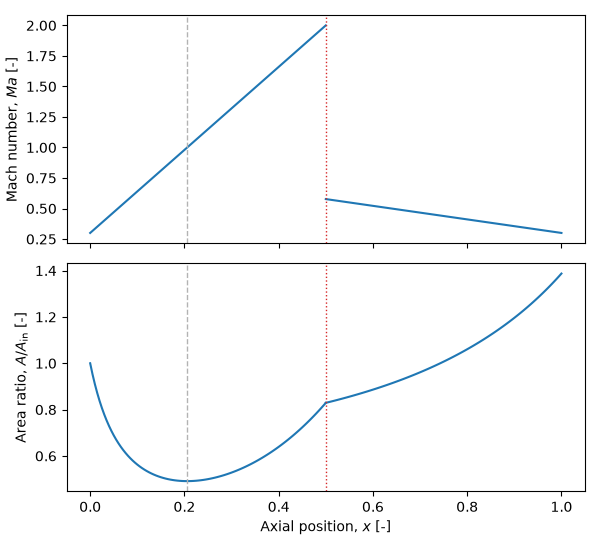

Note
Go to the end to download the full example code.
Shocked nozzle design¶
This example is the inverse of the nozzle analysis: instead of prescribing the area variation and solving for the Mach number, we prescribe the Mach number distribution through a converging–diverging nozzle containing a normal shock and recover the area variation that produces it.
The Mach number rises linearly from the inlet, through sonic at the geometric throat, to a supersonic value just upstream of a normal shock. The Rankine–Hugoniot jump conditions return the subsonic state downstream, from which the Mach number falls linearly back to the inlet value. Each isentropic stretch is solved with the same Picard sweep as the analysis example, but driven by the prescribed Mach number (\(V = \mathit{Ma}\,a\) on the current sound speed) rather than by mass conservation. The shock is the only place an algebraic solve is needed; everything else stays a fixed-point iteration on the equation of state, so the method remains working-fluid independent.
import numpy as np
import matplotlib.pyplot as plt
import ember.block
import ember.fluid
Stagnation reservoir¶
As before, the upstream reservoir fixes the stagnation enthalpy and the
entropy of the (isentropic) flow ahead of the shock, obtained with bare
ember.fluid calls.
fluid = ember.fluid.PerfectFluid(cp=1005.0, gamma=1.4, mu=1.8e-5, Pr=1.0)
Po = 1e5 # Stagnation pressure [Pa]
To = 300.0 # Stagnation temperature [K]
rhoo, uo = fluid.set_P_T(Po, To)
ho = fluid.get_h(rhoo, uo) # Stagnation enthalpy (conserved across the shock)
s_up = fluid.get_s(rhoo, uo) # Entropy upstream of the shock
Prescribed Mach number, upstream of the shock¶
The duct is discretised into ni stations with the shock at mid-length.
Upstream, the Mach number rises linearly from the inlet value, passing through
unity at the geometric throat, to a supersonic value just before the shock.
Isentropic Picard solver¶
A small helper converges the static state of an isentropic stretch to a prescribed Mach distribution. Each sweep sets the velocity to \(\mathit{Ma}\) times the current sound speed, applies the energy equation \(h = h_0 - V^2/2\), and refreshes the state – the fixed point is exactly the state whose Mach number matches the target, found with no table or per-point inversion. The velocity update is under-relaxed for stability.
def axial_velocity(V):
"""Pack a scalar axial velocity field into a (n, 3) polar velocity array."""
zero = np.zeros_like(V)
return np.stack([V, zero, zero], axis=-1)
def solve_isentrope(Ma, s, relax=0.5):
"""Converge an isentropic Block flow field to a prescribed Mach number."""
n = Ma.size
block = ember.block.Block(shape=(n,))
block.set_fluid(fluid)
block.set_h_s(ho * np.ones(n), s)
block.set_Vxrt(axial_velocity(np.zeros(n)))
for _ in range(500):
V_prev = block.V
V = V_prev + relax * (Ma * block.a - V_prev) # Drive velocity from Mach
block.set_h_s(ho - 0.5 * V**2, s)
block.set_Vxrt(axial_velocity(V))
if np.max(np.abs(V - V_prev)) < 1e-4:
break
return block
upstream = solve_isentrope(Ma_up, s_up)
Normal shock (Rankine–Hugoniot)¶
The shock conserves mass, momentum and energy. Taking the upstream state just before the shock, the downstream state is the non-trivial root of the jump conditions. Parametrising by the downstream density \(\rho_2\), continuity gives \(V_2 = \rho_1 V_1 / \rho_2\), momentum gives \(p_2\), and energy gives \(h_2\); the equation of state must then reproduce \(\rho_2\). A 1-D root find on that residual returns the compressed (subsonic) branch.
rho1, V1, P1 = upstream.rho[-1], upstream.V[-1], upstream.P[-1]
mass_flux = rho1 * V1 # rho V, conserved across the shock
impulse = P1 + rho1 * V1**2 # p + rho V^2, conserved across the shock
def shock_residual(rho2):
V2 = mass_flux / rho2 # Continuity
P2 = impulse - mass_flux * V2 # Momentum
h2 = ho - 0.5 * V2**2 # Energy (ho conserved)
rho_eos, _ = fluid.set_P_h(P2, h2)
return rho_eos - rho2
def bisect(fun, lo, hi, n=60):
"""Root of a monotonic residual by bisection (avoids a scipy dependency).
A fixed number of halvings is used rather than an absolute tolerance: the
block data is single precision, so the interval cannot shrink below the
float32 spacing and a tolerance test could otherwise never be satisfied.
"""
f_lo = fun(lo)
for _ in range(n):
mid = 0.5 * (lo + hi)
if (fun(mid) > 0.0) == (f_lo > 0.0):
lo = mid
else:
hi = mid
return 0.5 * (lo + hi)
# Bracket above rho1: a shock compresses the gas (rho2 > rho1).
rho2 = bisect(shock_residual, rho1 * (1.0 + 1e-4), rho1 * 20.0)
V2 = mass_flux / rho2
P2 = impulse - mass_flux * V2
h2 = ho - 0.5 * V2**2
_, u2 = fluid.set_P_h(P2, h2)
s_down = fluid.get_s(rho2, u2) # Entropy rises across the shock
Ma_down = V2 / fluid.get_a(rho2, u2) # Subsonic post-shock Mach number
Prescribed Mach number, downstream of the shock¶
Downstream the flow is isentropic again, but on the higher entropy s_down
(the stagnation pressure has dropped while the stagnation enthalpy is
unchanged). The Mach number falls linearly from the post-shock value back to
the inlet value, and the same solver gives the state.
Shock: Ma 2.00 -> 0.577
Stagnation pressure ratio across shock: 0.721
Area variation from mass conservation¶
With the states known everywhere, the area follows algebraically from
continuity \(\rho V A = \dot{m}\): normalising by the inlet, the area
ratio is the inlet mass flux divided by the local mass flux. The mass flux is
continuous across the shock, so the area is too – even though the Mach number
jumps. Note that the exit area exceeds the inlet area despite Ma returning
to its inlet value, because the entropy rise leaves the two stations on
different isentropes.
G_in = (upstream.rho * upstream.V)[0]
A_up = G_in / (upstream.rho * upstream.V)
A_dn = G_in / (downstream.rho * downstream.V)
i_throat = np.argmin(A_up) # Geometric throat = minimum area (sonic point)
print(f"Throat area ratio A/A_in = {A_up[i_throat]:.3f}")
print(f"Exit area ratio A/A_in = {A_dn[-1]:.3f}")
Throat area ratio A/A_in = 0.491
Exit area ratio A/A_in = 1.387
Result¶
The prescribed Mach distribution (with its shock discontinuity) and the recovered area variation, drawn against axial position. The throat and shock locations are marked.
fig, axs = plt.subplots(2, 1, sharex=True, figsize=(6, 5.5))
axs[0].plot(x[: i_shock + 1], upstream.Ma, "-")
axs[0].plot(x[i_shock:], downstream.Ma, "-", color="C0")
axs[0].set_ylabel("Mach number, $\\mathit{Ma}$ [-]")
axs[1].plot(x[: i_shock + 1], A_up, "-")
axs[1].plot(x[i_shock:], A_dn, "-", color="C0")
axs[1].set_ylabel("Area ratio, $A/A_\\mathrm{in}$ [-]")
axs[1].set_xlabel("Axial position, $x$ [-]")
for ax in axs:
ax.axvline(x[i_throat], color="0.7", ls="--", lw=1.0) # Throat
ax.axvline(x[i_shock], color="C3", ls=":", lw=1.0) # Shock
fig.tight_layout()
plt.show()

Total running time of the script: (0 minutes 0.133 seconds)